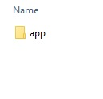
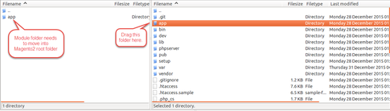
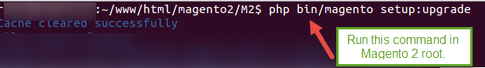
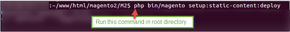
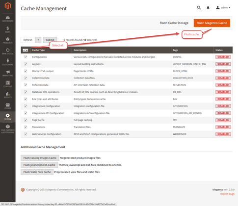
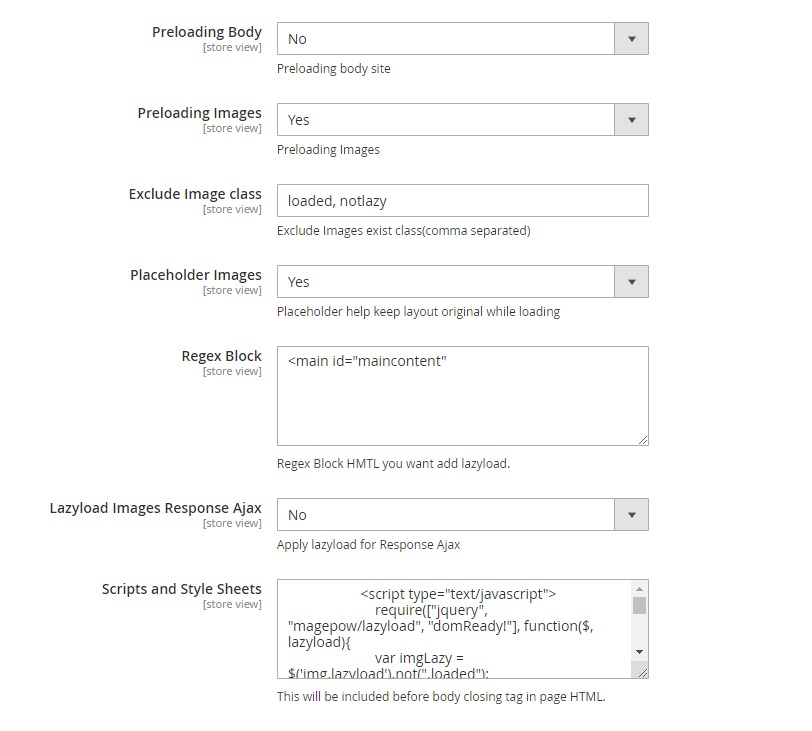
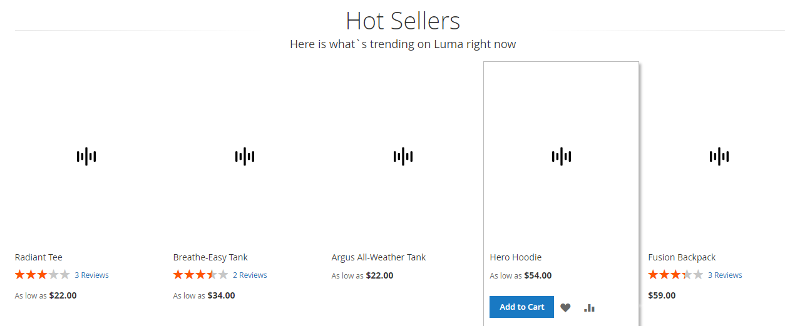
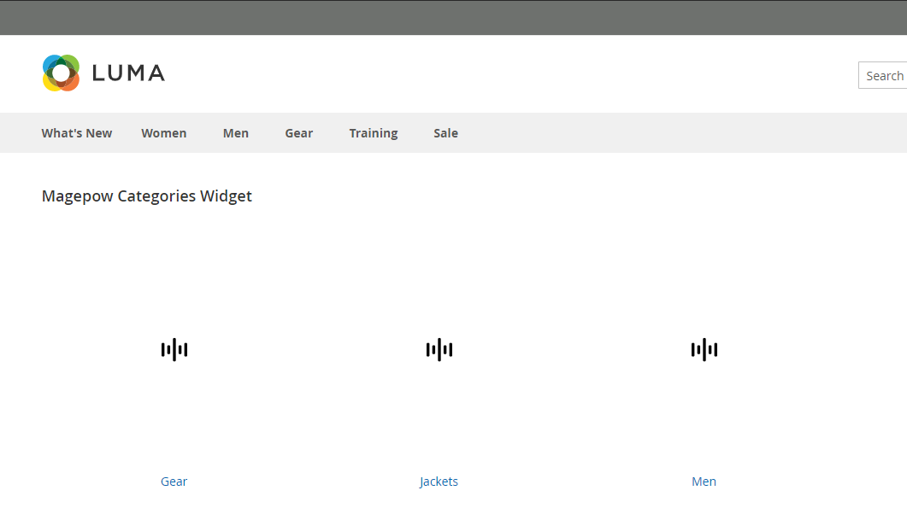

Lazy Load Magepow Extension
Magento Extension Document
1 - Prepare your Magento
- It is recommended to install the extension on a test server before you install it in a live store.
- Backup Magento files and the store database. Important: Creating backup before installation of any extensions in Magento is extremely important, especially when are working on a live store.
- Disable Compilation Mode in System >Tools > Compilation.
-
Disable:
-
Magento Cache (refer to II.1.2 Disable Cache For Details)
-
Full page cache and caching module for Magento (such as Speedster)
-
Any Additional cache on your server, PHP cache engines, APC, etc.
Important: When developing your Magento store, in order to be able to see changes immediately, you should completely disable the cache.You can enable it after you finish configuring your store.
-
Remove all possible custom modifications of the Magento “base” theme. "alomagicproduct"(same as any Magento theme) relieson “base” theme,so any modifications of the “base” theme can change the default behavior of alomagicproduct and break some functionality.You should never edit“base” theme's files.
-
Log out from Magento admin panel. Do not just close the browser window: you need to click Log Out link to refresh the access control system.
2.1 Install Extension
Please following steps below:
Step 1:Upload the whole Extension package (app folder ) to your server.
magento2-lazyload, we got:

Update extension to your server or copy folder app above to your Magento in localhost.

Step 2: Install extension
After the successful installation you have to run the command on Magento2 root directory
commandline: php bin/magento setup:upgrade

Also, run this commands in the Magento2 Root.
commandline: php bin/magento setup:static-content:deploy -f
You can refer the below screenshot.

After running the command, you have to log into the admin panel and you have to clear the Cache.
You can refer to the below screenshot.

Step 3: Finish installer.
The following chapter describes some of the basic Magento settings and features. Please note that as authors of this theme we provide support only for the issues related strictly to the extension. Support for Magento configuration/ installation/ maintenance etc is beyond the scope of our support. This chapter should be only treated as a starting point, more information about Magento can be found in Magento documentation : Magento help
1 - General Configuration
Enable/Disable module
To Enable/DisableMagepow Lazy Load Extension: Go to Admin Panel > Stores > Settings > Configuration > Magepow > Lazy load. Then, select Yes to Enable module/No to Disable the module
General Configuration

- Preloading Body: Set Yes to use Preloading body site. If not, set No
- Preloading Images: Set Yes to use preloading images

- Exclude Image class: Enter the class of images that you don't want to be applied lazy load such as top banner, header,...
- Placeholder images: Set Yesto create placeholder for all loading images. This case will help you keep the website layout (frame) while the images have not loaded completely
- Regex Block: Enter the place that you want to use lazy load from that place to footer by using id or class of block. For example, this will be good for people want to keep the first content such as slider, header... not effected by Lazy load
- Lazyload Images Response Ajax: Set Yes to apply Lazy load for Response Ajax. If not, set No
- Scripts and Style Sheets: This field is for who want to customize the lazy load, use particular scripts or style
2 - Result in Frontend
Results in frontend
On product page

1 - Support
- Ticket Support: http://alothemes.com/ticket. If you have found any bugs or have some other problems with this extension. If the problem is not covered there, you can contact us via support center. We will respond as soon as possible (within 24 – 48 hours, usually much faster)
2 - Contact
- Support Email support@alothemes.com
- Contact Sales: contact@alothemes.com
Thank for Purchase!